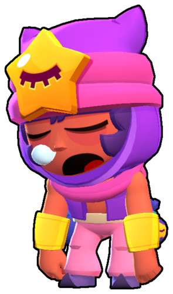

Сэнди - легендарный боец с умеренным здоровьем и уроном. Его форма атаки - конусная прямая. Он страдает хроническим недосыпом и буквально спит на ходу. Внешне похож на Тару и Джина. Своей атакой забрасывает противников гравием. Может наносить урон неограниченному количеству бойцов. Его супер позволяет своим союзникам и ему быть невидимым в радиусе песчаной бури, которую он вызывает.
